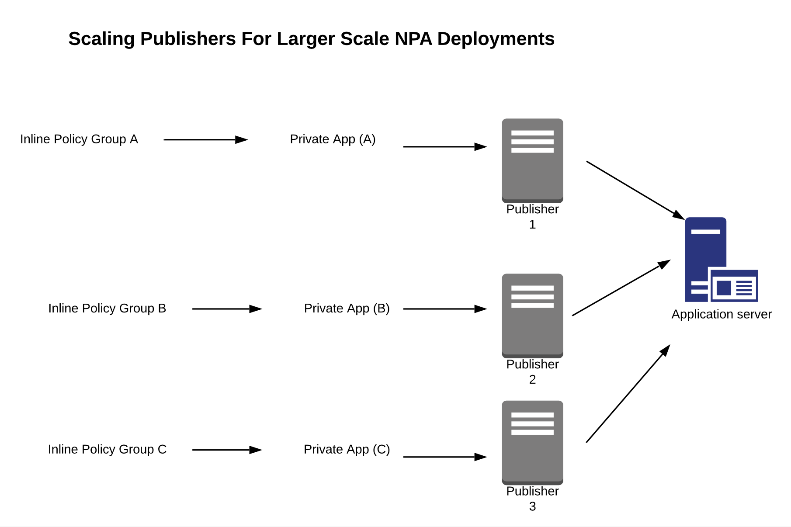

About Netskope Private Access
Netskope Private Access (NPA) is part of the Netskope security cloud and enables zero-trust secure access to private enterprise applications in Hybrid IT. NPA is a modern remote access service that:
Fans out to enable access to applications in multiple networks, both in the public cloud (AWS/Azure/GCP) and in the datacenter.
Provides zero trust application level access instead of network access with lateral movement.
Is delivered as a cloud service with a worldwide footprint that scales easily.
NPA delivers these benefits through a capability called Service Publishing. Service Publishing makes enterprise applications available at and through the Netskope cloud platform instead of at the enterprise's network edge.
The Netskope cloud platform becomes the location on the internet through which enterprise applications are accessed, in a sense, externalizing the access components of the DMZ. Externalizing remote access in this way has several advantages over traditional VPN and Proxy-based remote access approaches. And Service Publishing’s overall architecture and delivery-as-a-service model is consistent with the IT trends of infrastructure as a service, Hybrid IT, and the decentralized delivery of enterprise applications from datacenter, public cloud, and SaaS. NPA is illustrated in this diagram:
 |
Netskope Private Access extends Netskope’s platform for secure access to SaaS and Web to include secure access to Private Applications that live behind an enterprise’s firewalls in the datacenter and the public cloud.
To watch a video about configuring Netskope Private Access, click play:
Prerequisites
In order to configure private apps with a publisher, you need to:
Purchase the Netskope Private Access license and contact Support to have it enabled in your tenant..
Choose a private app to be published.
Collect information about the app: host, port(s).
Identify the network on which the app is running.
Be using release 70 or later of the Netskope Client.
Requirements and Recommendations
Before deploying a Publisher, factor these requirements and recommendations:
General VM Requirements
2 CPUs
4GB RAM
8GB HDD space
Publisher Capacity
When considering publisher capacity and scaling the following are key points to consider:
Each publisher can handle around 160 Mbps of throughput.
A Publisher is agnostic to the number of users that traverse it.
A Publisher is limited to using a single IP address for both inbound and outbound connections. A single publisher should not be tasked with handling more than 32,000 concurrent TCP or UDP connections.
Scaling Publishers for Large Apps or Wildcard Networks/Domains
While publishers are agnostic to the number of users, the number of users that are supported by a single publisher is dependent on the type of applications used. Use the information below to help determine maximum number of users per publisher based on the applications used:
For web applications, browsers can open up to six concurrent connections per domain. For the purpose of sizing, the recommendation is to divide 32,000 by 6 to derive how many maximum concurrent users may be using a single publisher if it's providing access to an HTTP-based application.
For FTP workloads, it’s 2 TCP connections per user per FTP session.
For SSH/SQL connections, it’s one TCP connection per user.
To scale access to broad networks and/or large applications that need to accommodate access that exceeds the capability of available publishers in a particular location, the following publisher cluster approach can be used. A round robin mechanism to load balancing clients across publishers is used.
An environment may only have a single publisher installed, with the goal of adding additional publishers in a cluster to scale. In order for Netskope to distribute the load evenly across the new publishers in the cluster, it is recommended to reboot the original publisher. This will force the users to be spread across the cluster of publishers for a more even distribution.
|  |
Important
Netskope does not recommend spreading publishers serving the same application across different physical locations or geographic regions as this could result in higher latency for some users.
Networking Services
Network:
Publishers should have network connectivity to your internal apps.
Publishers should have network connectivity (outbound) to the Internet to reach various Netskope services: configuration, gateways, upgrade, and other service endpoints.
DNS:
Publishers should be able to resolve internal service names, for example:
myapp.example.com.Publishers should be able to resolve external service names (on the Internet), including the various Netskope services: configuration, gateways, upgrade, and other service endpoints.
SSH:
You should be able to SSH into the Publisher from an internal desktop computer for basic administration tasks, such as passing the registration token to the Publisher during initial setup and troubleshooting any issues which might arise. A publisher cannot be used to connect to itself.
If you deploy the Publisher VM into a network with DHCP services, it should pick up a valid networking configuration automatically, including an IP address, default gateway, and DNS.
If you deploy the publisher VM into a network without DHCP services, you must configure a static IP address, default gateway, and DNS.
Netskope recommends that your network includes DHCP.
Note
Publishers may be subject to SSL interception. Make sure that access to *.npa.goskope.com is allowlisted from SSL interception.
Network Settings
In the NPA Publisher Wizard (available via your virtualization console or after SSHing to a running Publisher), you can now select Network Settings for configuration details.
There are two configuration options available:
DHCP: This allows you to specify a network adapter for DHCP configuration. eth0 is used in the example, but other adapters may be present depending on your NPA Publisher hardware configuration. For example, ens32 or similar will be present on NPA Publishers deployed to VMWare.
Static IP: This option allows you to specify static IP address configurations in environments where DHCP configuration is not possible. The following values must be provided as part of this configuration:
Network Adapter
IP Address and Mask: For example, 192.168.1.189/24
Gateway: For example, 192.168.1.1
DNS Servers: We recommend using two DNS server IP addresses, though only 1 is required.
Default Search Domain: This configuration is typically set to match the domain name of your company.
Workflow
You can grant access to multiple private apps by repeating the following steps:
Create a publisher.
Deploy the publisher on your network.
Create a private app.
Steer traffic for the private app.
Add users.
Create policies so users can access a private app.
Deploy the Netskope Client on devices.
View Network and Page events in SkopeIT.
Note
The same publisher can be used to give access to multiple apps which resides on the same network.
If you need private apps in different networks (which are not routable from one to another), you will need to repeat these steps for each:
Create a publisher.
Deploy a publisher.